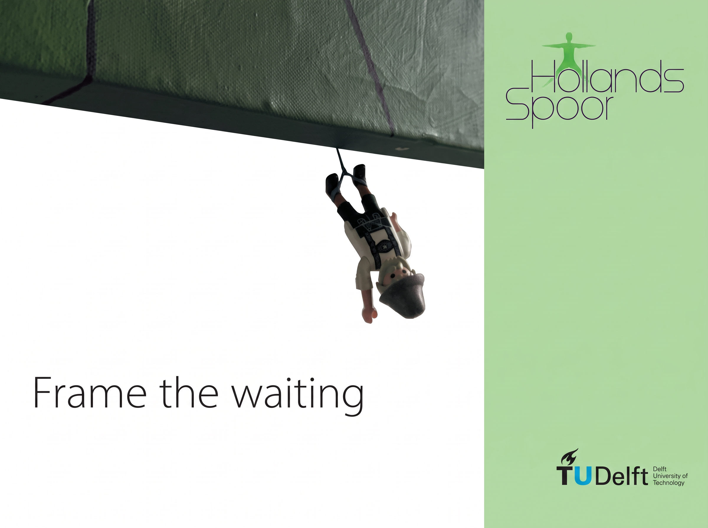
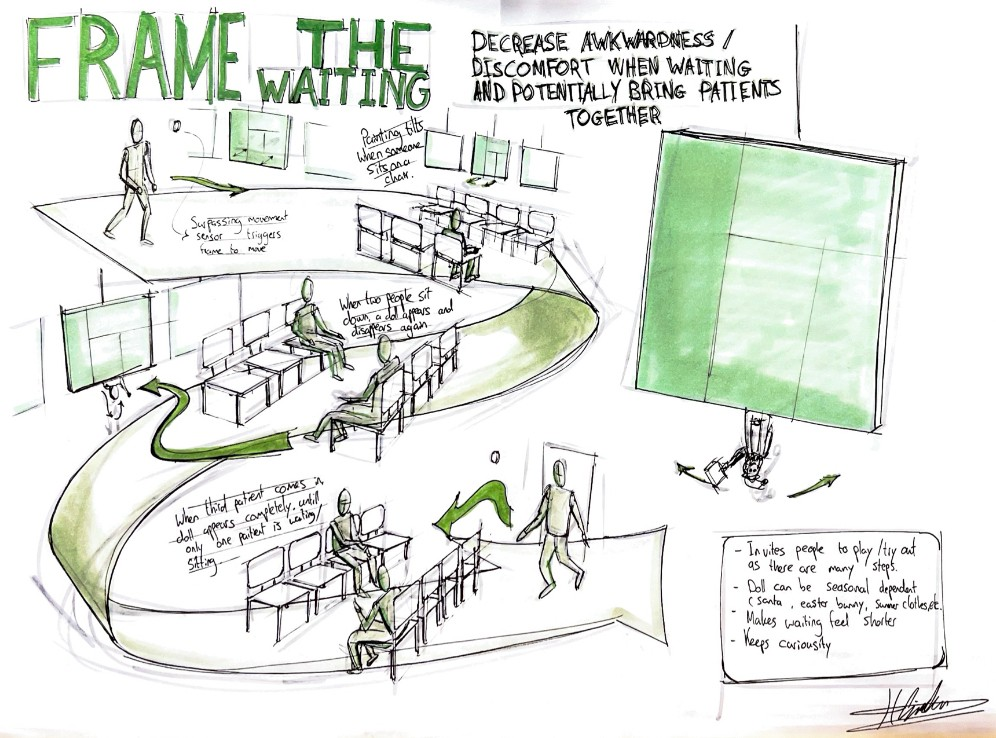
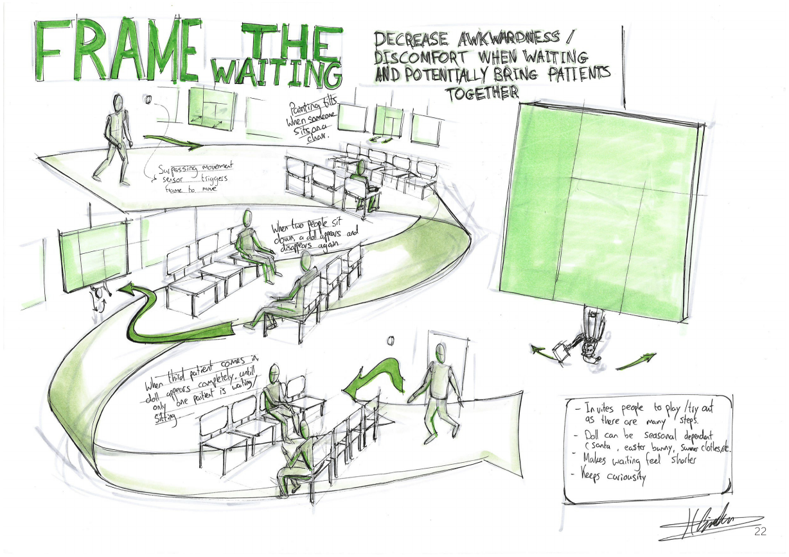
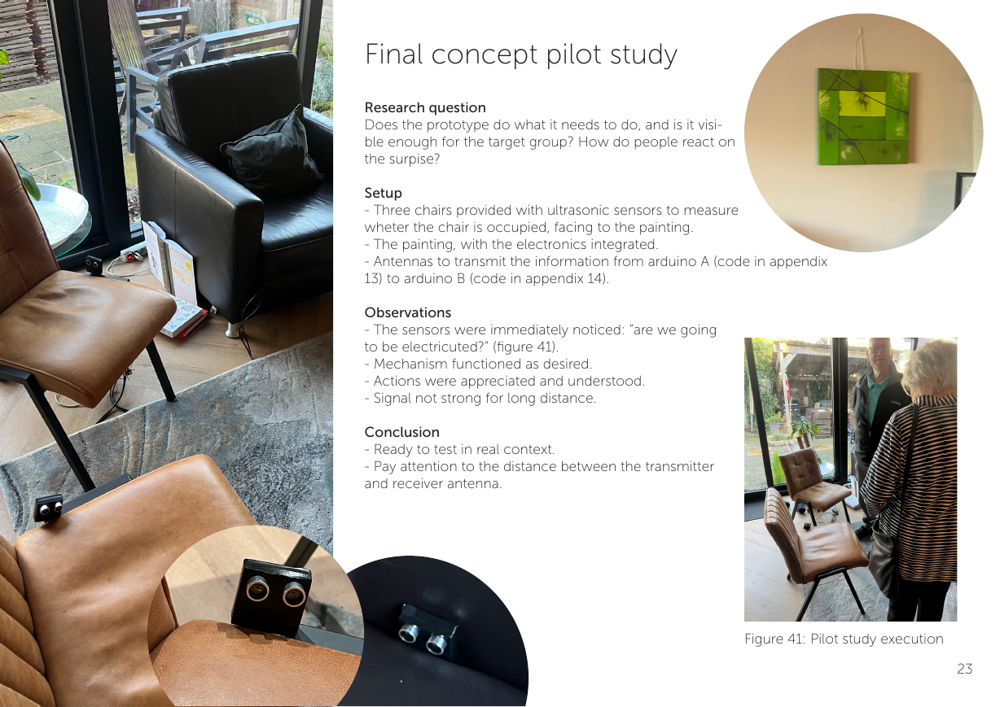

2026 · Dare 2 Design Studio
Frame the
waiting.
An interactive installation designed to make waiting for physiotherapy feel a little less awkward and a little more joyful.
A pause that
invites connection.
Waiting rooms can make time feel uncomfortable, particularly before a physiotherapy appointment. This project reframed that in-between moment as an opportunity for a gentle, shared interaction.
Frame the waiting uses a playful wall-mounted artwork and subtle seating cues to give people a reason to notice one another, without forcing conversation.



Designed to
respond together.
The final concept connects two facing chairs to an artwork through integrated ultrasonic sensors and wireless electronics. When people sit down, the installation responds as a shared event.
A pilot study tested whether the mechanism was noticeable and understandable. Participants immediately noticed the sensors, and the shared movement was appreciated as a light, surprising intervention.
From research
to a real context.
- Explored the waiting experience through observations, interviews and successive prototypes.
- Developed the interaction from early physical experiments into a sensor-based prototype.
- Used pilot feedback to prepare the concept for evaluation in a real physiotherapy waiting room.